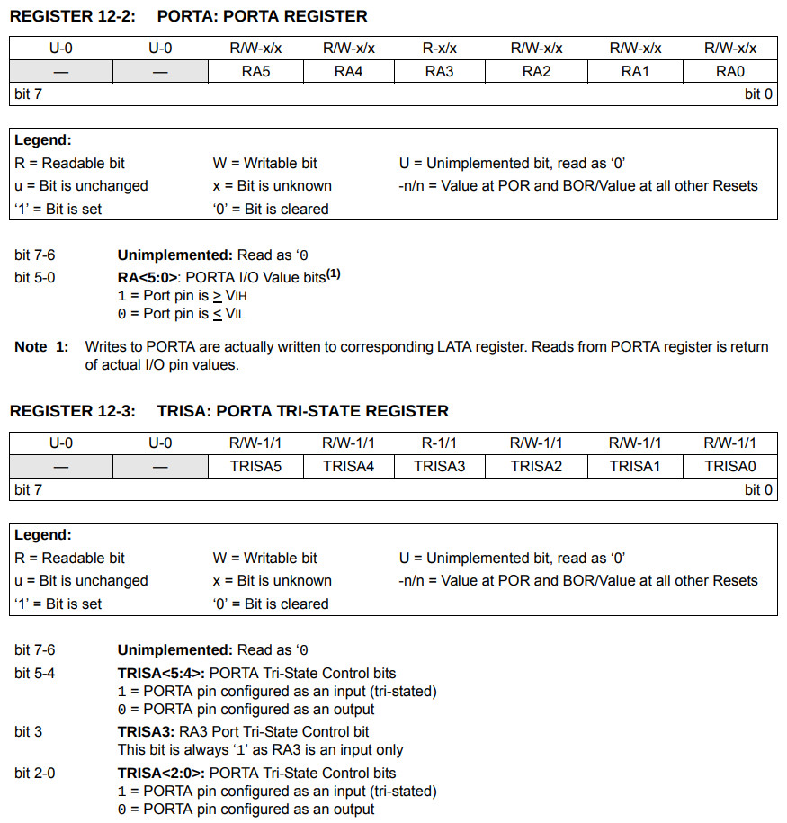
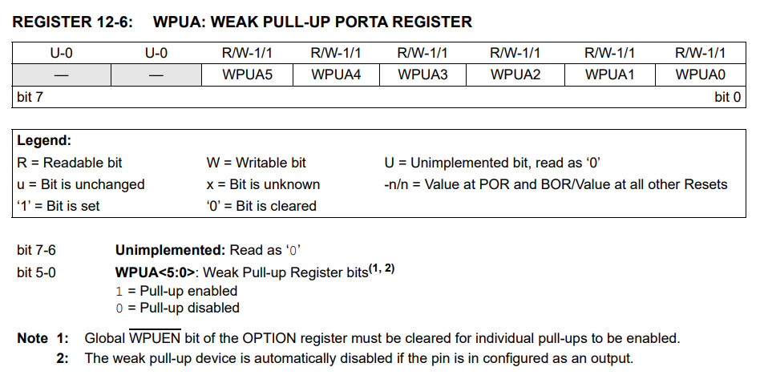
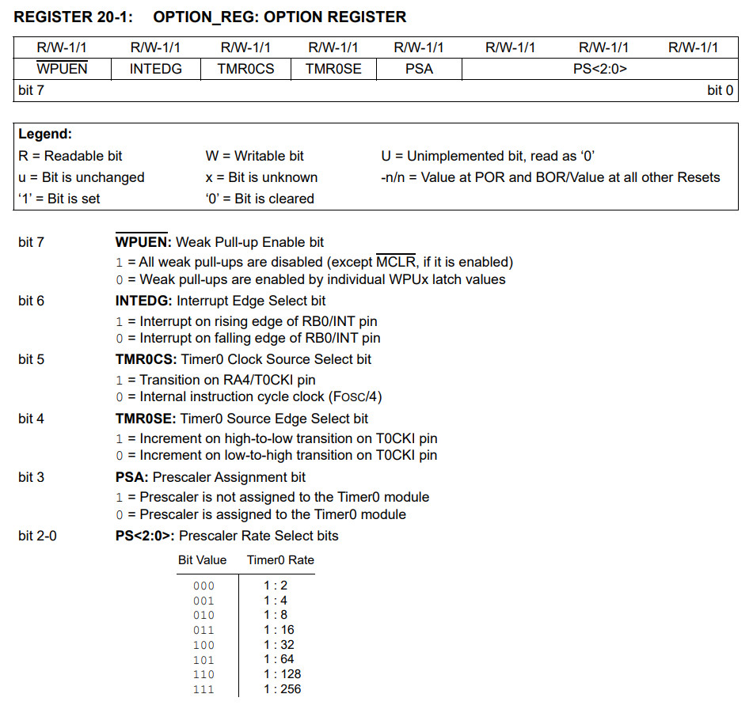
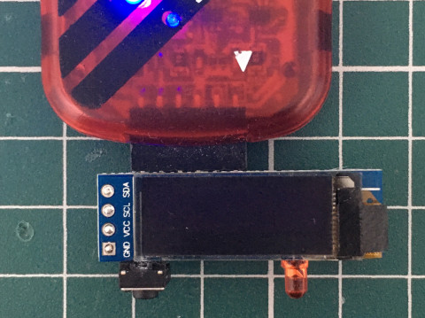
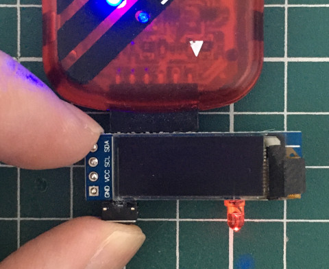

TRISA(方向設定)、PORTA(I/O資料)



list p=12f1822, r=hex
#include <p12f1822.inc>
__config _CONFIG1, _FOSC_INTOSC & _WDTE_OFF & _MCLRE_OFF
__config _CONFIG2, _LVP_OFF
org 0x0000
goto start
org 0x0100
start:
banksel TRISA
bcf TRISA, 0
bsf TRISA, 3
banksel OPTION_REG
bcf OPTION_REG, 7
banksel WPUA
bsf WPUA, 3
banksel PORTA
bsf PORTA, 0
loop:
banksel PORTA
btfss PORTA, 3
bcf PORTA, 0
btfsc PORTA, 3
bsf PORTA, 0
goto loop
end
編譯
$ gpasm main.s
完成

